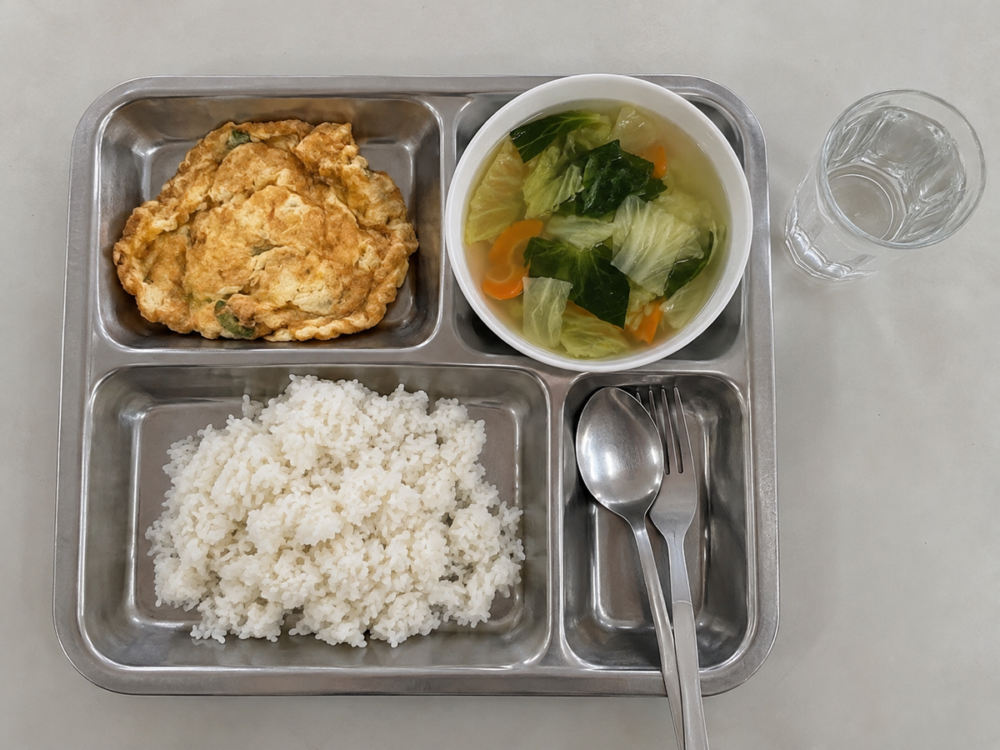

รีวิวภาษาไทย · 4 กันยายน 2569
เพิ่มข้าวในวันที่คนเยอะ
ผู้รีวิวระบุว่าจ่าย 60 บาทเพราะเพิ่มข้าว รอประมาณ 18 นาที และรู้สึกอิ่มถึง 16:30 น. ผู้รีวิวไม่ได้ชั่งปริมาณอาหารและไม่ได้บันทึกกิจกรรมหลังมื้อกลางวัน
สถานะ: หน้าเว็บและรีวิวนี้สร้างขึ้นเพื่อการสอน ไม่ใช่ผลวิจัยหรือคำแนะนำด้านโภชนาการ

รีวิวภาษาไทย · 4 กันยายน 2569
ผู้รีวิวระบุว่าจ่าย 60 บาทเพราะเพิ่มข้าว รอประมาณ 18 นาที และรู้สึกอิ่มถึง 16:30 น. ผู้รีวิวไม่ได้ชั่งปริมาณอาหารและไม่ได้บันทึกกิจกรรมหลังมื้อกลางวัน
English review · 5 September 2026
The reviewer reported paying 55 baht, waiting about eight minutes, and feeling hungry again around 15:00. The post did not record breakfast, health conditions, or physical activity.
หน้าเว็บแก้ไขล่าสุดเมื่อ 6 กันยายน 2569 ข้อมูลจากเว็บไซต์ควรบันทึก URL และวันที่เข้าถึง เพราะเนื้อหาออนไลน์อาจเปลี่ยนภายหลัง